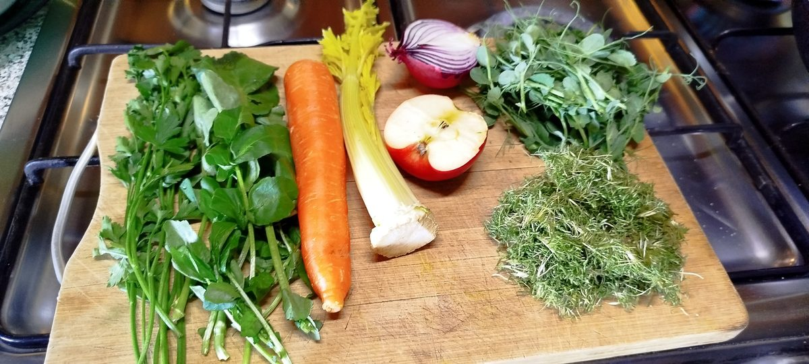
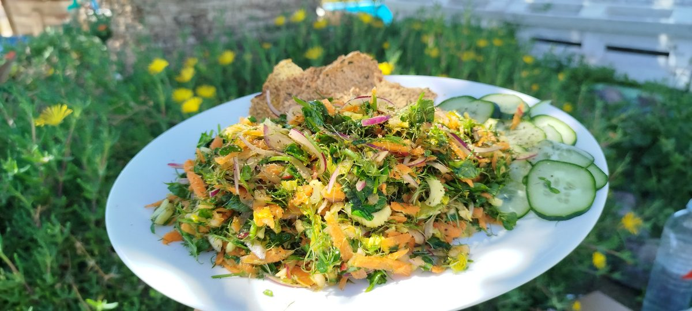
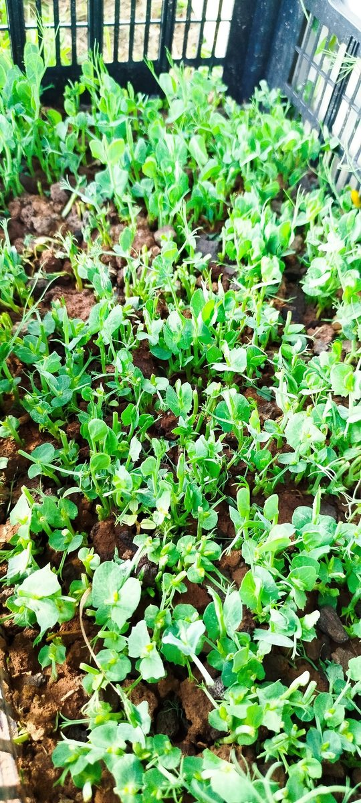

Microgreens machen die Mineralien der Samen besser verfügbar und potenzieren den Vitamingehalt und Vitalwert mit aktiven Enzymen und sekondären Pflanzenstoffen. Ergänzung zur Saison oder Ganzjahres-Mineralien-Quelle für Wohnungen ohne Balkon.


Samen lagern Mineralien gebunden an Phytinsäure ein — das hält sie stabil und schützt vor Fressfeinden. Beim Keimen baut die Jungpflanze die Phytinsäure ab (um 50–80 %), Trypsin-Inhibitoren sinken um die Hälfte. Die im Samen gelagerten Mineralien werden bioverfügbar.
Brokkoli liefert Sulforaphan, Eisen, Mangan. Erbsen sind Phosphor- und Kupferquelle. Sonnenblumen sind Calcium-Spitzenreiter unter den Microgreens. Buchweizen passt zur Molybdän-Strategie aus dem Praxisprotokoll 3. Bio-Raps liefert Schwefel-Verbindungen. Durch das schnelle Wachstum kann der Mineralgehalt leicht und kostengünstig über angereichertes Gießwasser erhöht werden.
Studien an Vermicompost-Sägespäne-Mischungen zeigen 40/60 als Optimum, weitere Studien zu Vermicompost-Bestandteilen 50:50 mit +39,8 % Ertrag bei Radieschen. Für Microgreens hat sich 30/70 als robuster Mittelwert bewährt — Kokosfaser als Träger mit guter Wasserführung, Wurmhumus für Bodenleben und natürliche Wachstumshormone.

Erbsen-Microgreens nach mehreren Ernteschnitten auf lehmiger Gartenerde (Experiment): das Grün ist auch nach 3 Schnitten noch relativ zart und lecker.
Durch die versetzte Keimdauer günstiger grüner Erbsen als Lebensmittel-Zutat verlängert sich die Erntezeit zusätzlich, weil stetig kleine, neue Pflänzchen aus verzögerter Keimung hinzukommen.
Heißt: eine Aussaat liefert über löngeren Zeitraum frisches Schnittgut — kein wöchentliches Neu-Aussäen, kein Abrupt-Stop nach dem ersten Schnitt.
Anreicherung lohnt erst, wenn die ersten echten Blättchen anstehen — bei den meisten Sorten ab Tag 4 bis 5. Vorher reines Wasser. Wer experimentieren möchte, mischt sich einmal eine Mineral-Stammlösung aus der Aquaristik und dosiert dann wie folgt.
Hält im Kühlschrank etwa 6 Monate.
Schütteln, fertig.
Diese Dünger liefern Mn, Zn, Cu, Mo, B und Fe als Chelat-Komplex, ohne Nitrat und ohne Phosphat. In der Aquaponik für Lebensmittelpflanzen etabliert.
5 ml Stammlösung auf 1 Liter Gießwasser, ab Tag 4 alle 2 Tage. Optional zusätzlich 50 ml Schachtelhalm-Tee pro Liter als Si-Quelle. Die Stammlösung reicht für etwa 50 Liter Gießwasser — also viele Schalen über Wochen.
| Sorte | Reife | Mineral-Schwerpunkt | Hinweis |
|---|---|---|---|
| Brokkoli | 5–7 Tage | Sulforaphan, Eisen, Mangan | Anfänger-tauglich, schnell |
| Erbse | 7–10 Tage | Phosphor, Kupfer | Mehrfach-Ernte möglich, kräftiger Geschmack |
| Sonnenblume | 8–12 Tage | Calcium-Spitzenreiter | Schalen müssen einzeln entfernt werden — anspruchsvoller |
| Buchweizen | 7–10 Tage | Mo-Strategie | Hülsen vor Verzehr abspülen |
| Bio-Raps | 5–8 Tage | Schwefel-Quelle | Nur unbeizte Speiseraps-Saat aus Ölmühlen |
Bio-Saatgut bevorzugen — konventionelle Saat kann mit Beizmitteln behandelt sein, die im Cotyledon-Stadium direkt mitgegessen werden. Bei Raps unbedingt Speiseraps-Saat aus Ölmühlen, nie industriellen Raps.
Schalen vor jedem Durchgang heiß auswaschen. Bei feuchter, warmer Aufzucht-Umgebung Schimmel ein häufiger Frust — Belüftung verbessern, Wasserstand niedrig halten, ggf. Wasserstoffperoxid-verdünnt zur Saatgut-Vorbehandlung.
Erst Dunkelphase (3–5 Tage, Schale abgedeckt), dann ans Licht. Vollsonne ist nicht nötig — Fensterbank Nordseite oder LED-Leuchte reicht. Zu wenig Licht: Microgreens werden lang und blass.
Bei den ersten echten Blättern (nicht den Keimblättern) ernten. Mit scharfer Schere knapp über dem Substrat schneiden, sofort essen oder im Kühlschrank in feuchtem Tuch lagern (max. 3–4 Tage).
Microgreens im Growtainer-Kontext sind weniger erforscht als Fruchtgemüse. Wer mitmachen möchte:
Beobachtungen, Saisonberichte, Sorten-Notizen gerne als Issue oder Pull Request im GitHub-Repo.